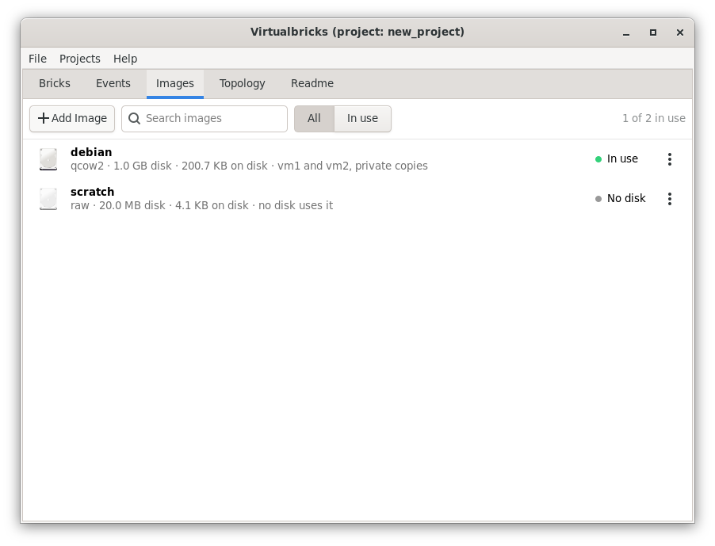

Disk images
A disk image is a file that holds the disk of a virtual machine, as
debian.qcow2. The Images tab has a row for each image of the project:
its format, the size of the disk that the machine sees, the space that
the file takes, and which disks use it, on a private copy or the image
itself. Its state is In use while a machine
that reads it runs or starts.


Adding an image
Add Image offers two ways:
- Existing Image…
-
A file you have. Virtualbricks reads it with
qemu-imgand copies it to the shared images of the workspace, unless you choose Use it where it is. - New Empty Disk…
-
A new file, of the Size and Format you choose, qcow2 or raw, in a Folder.
The same two are in the list of images of each disk of a machine.
The shared images
Each workspace has a folder of images that its projects share, shared_images. An image there can be used by several
projects, and by several machines of each, each machine on a private
copy of its own.
The menu of an image
- Details…
-
The name and the description, which you can change, then what
qemu-imgsays of the file, each disk that uses it, and the other projects that use the same file. - Rename…
-
A new name, in the disks that use it too.
- Show in Files
-
The file, in the file manager.
- Remove…
-
The image leaves the project. The dialog says which disks lose their image, and offers to move the file to the trash only when it is in the shared images and no other project uses it.
- Find the File…
-
For an image whose file is missing, as one left unset at the import of an archive: choose where it is now. The private copies made on it follow it.
See also
The DTN2hops testbed, from its archive and its disk image, downloaded apart.
The disks, network cards and consoles of a virtual machine.